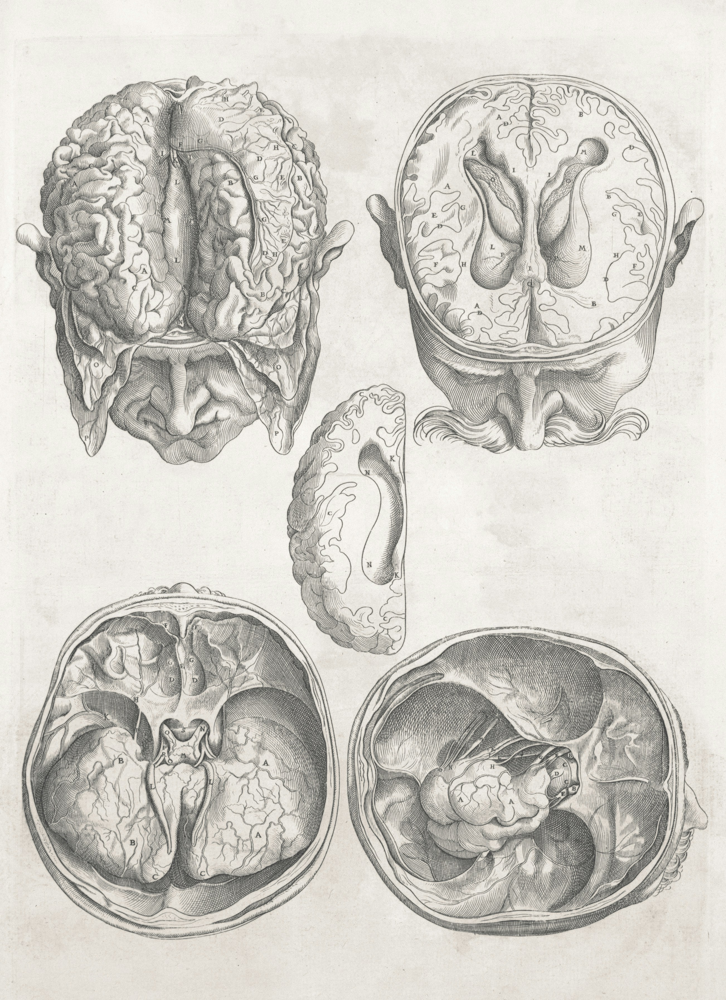
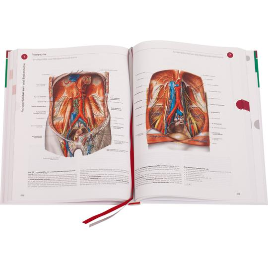
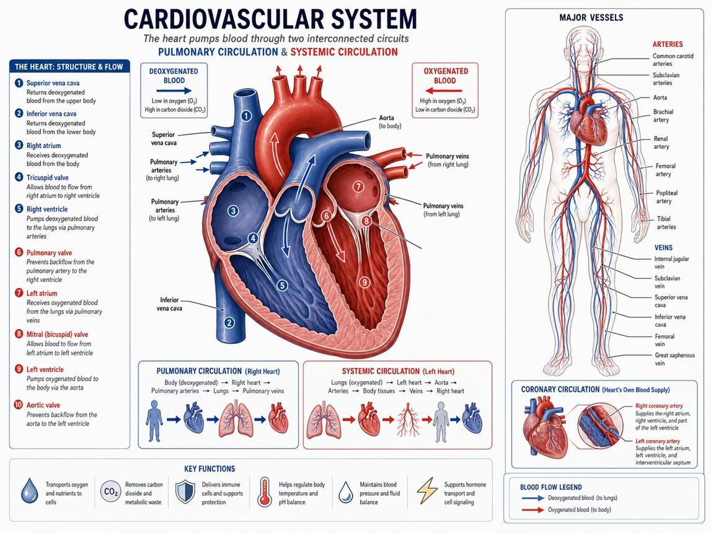
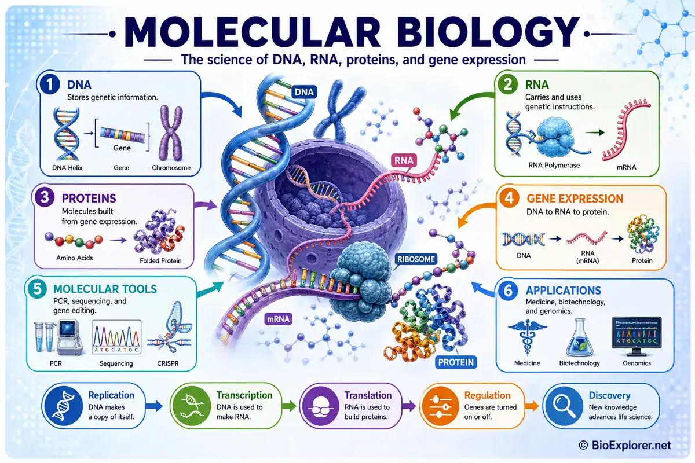
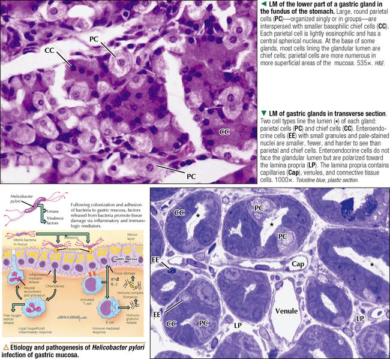
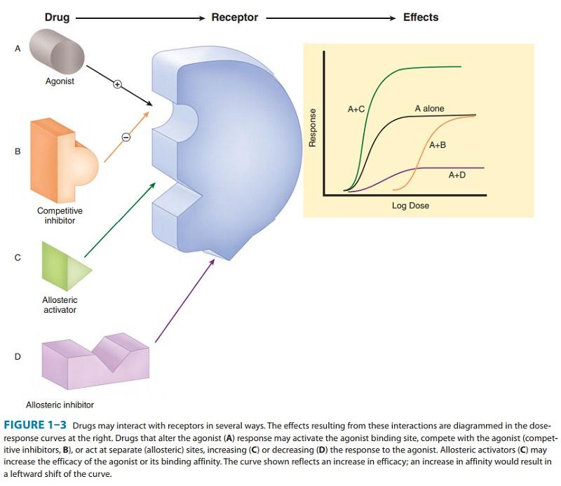
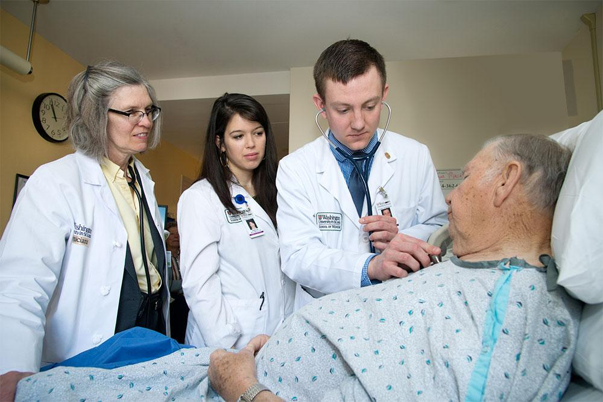
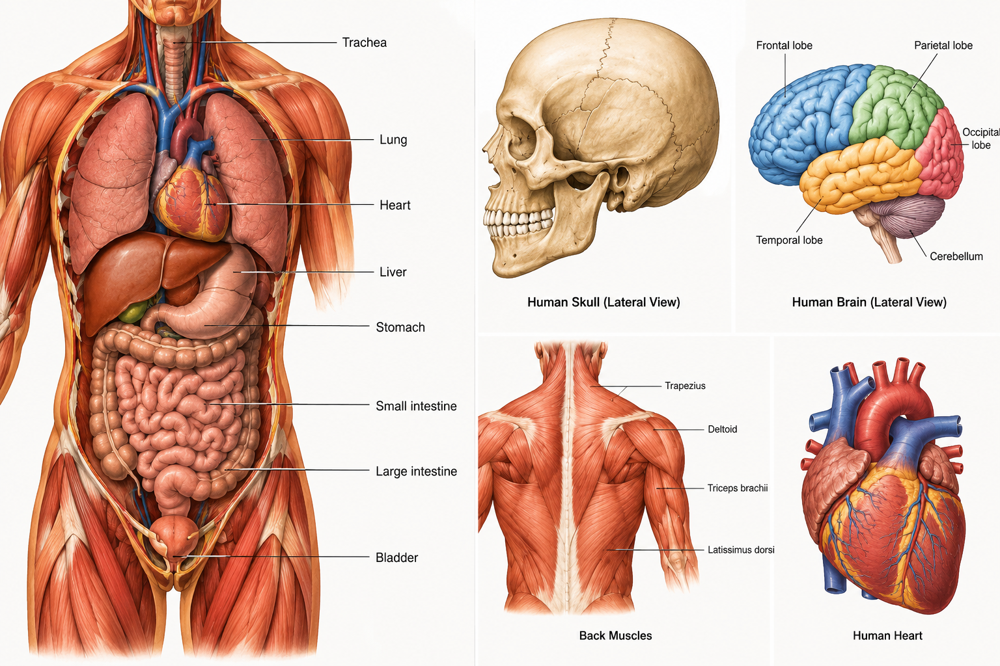

Our Mission
To simplify access to quality medical learning resources and empower students to develop a deeper understanding of medicine.

A modern learning platform designed to simplify complex medical concepts, strengthen clinical understanding, and help medical students study with greater confidence. Explore comprehensive study materials, structured course notes, visual explanations, and revision resources developed to make medical education more accessible, engaging, and effective.
ABOUT TEACHMED
We are a medical-learning platform committed to helping medical students understand complex subjects through clear explanations, structured learning resources, and accessible educational content.
Medical education demands more than memorisation. It requires a strong understanding of fundamental sciences, the ability to connect concepts across disciplines, and the development of analytical and clinical reasoning skills.
Our platform is designed to support that journey by organising essential medical knowledge into manageable learning materials that students can study at their own pace.
From foundational subjects such as anatomy, physiology, and biochemistry to pathology, pharmacology, and clinical sciences, our goal is to make learning more organised, engaging, and meaningful.

To simplify access to quality medical learning resources and empower students to develop a deeper understanding of medicine.
To become a trusted digital learning destination for medical students seeking clarity, confidence, and academic excellence.
We prioritise clarity, educational quality, responsible presentation of medical information, and continuous improvement. Our resources complement formal medical education and clinical supervision.
EXPLORE OUR CURRICULUM
Explore a comprehensive range of medical subjects designed to make learning clearer, more engaging, and easier to understand.
From the intricate structures of the human body to the mechanisms of disease and the science behind treatment, our courses break down complex concepts into organised, accessible learning experiences.
Build a strong foundation, deepen your understanding, and take the next step towards medical excellence.


Explore the structure of the human body, from individual tissues and organs to complex anatomical systems. Develop a clear understanding of anatomical relationships, landmarks, and clinical relevance.
Explore the subject
Understand how the human body functions. Study the mechanisms that regulate the cardiovascular, respiratory, nervous, renal, endocrine, and other essential systems.

Discover the molecular foundations of life through the study of enzymes, proteins, carbohydrates, lipids, nucleic acids, metabolism, and cellular energy production.

Understand the mechanisms of disease, including cellular injury, inflammation, tissue changes, neoplasia, and the relationship between pathological processes and clinical manifestations.

Learn how medicines interact with the body, including their mechanisms of action, pharmacokinetics, pharmacodynamics, therapeutic uses, adverse effects, and important precautions.

Connect foundational medical knowledge to clinical presentations, history-taking, physical examination, differential diagnosis, and evidence-based clinical reasoning.
WHY CHOOSE TEACHMED
Study with a clearer structure, stronger visual support, and a learning approach built around understanding.
Break complex medical concepts into clear, manageable ideas.
Move through important subjects in an organised, logical way.
Use anatomical illustrations and visual resources to reinforce understanding.
Revisit key concepts and strengthen your preparation for assessments.
Review learning materials when you need more time or a quick refresher.
Explore how foundational knowledge relates to clinical concepts and reasoning.

YOUR LEARNING JOURNEY
Four simple steps to a more organised medical learning experience.
Select the medical discipline or course you want to study.
Read organised notes, study diagrams, and work through explanations at your own pace.
Practise recalling what you have learned with quizzes, flashcards, and topic-based questions.
Revisit difficult concepts and use your results to guide your next revision session.

YOUR MEDICAL LEARNING COMPANION
Everything you need to strengthen your understanding, organised in one place.
Explore comprehensive topic notes, essential definitions, simplified explanations, clinical correlations, visual study guides, and revision materials across major medical disciplines.
Whether you are learning a subject for the first time or revisiting important concepts before an examination, our resources are designed to help you study with purpose and understand the science behind medicine.

GOT QUESTIONS?
Find answers to common questions about TeachMED and how our learning resources can support your studies.
Our platform is designed primarily for medical students and other learners seeking structured educational resources in the medical sciences.
Yes. Foundational concepts are presented in a structured manner, allowing learners to build understanding progressively before moving to more advanced material.
The notes, revision summaries, and practice questions are intended to support independent study and examination preparation. Students should also consult their prescribed curriculum and recommended textbooks.
No. It serves as a supplementary learning resource and should be used alongside recognised textbooks, formal teaching, current clinical guidance, and appropriate supervision.